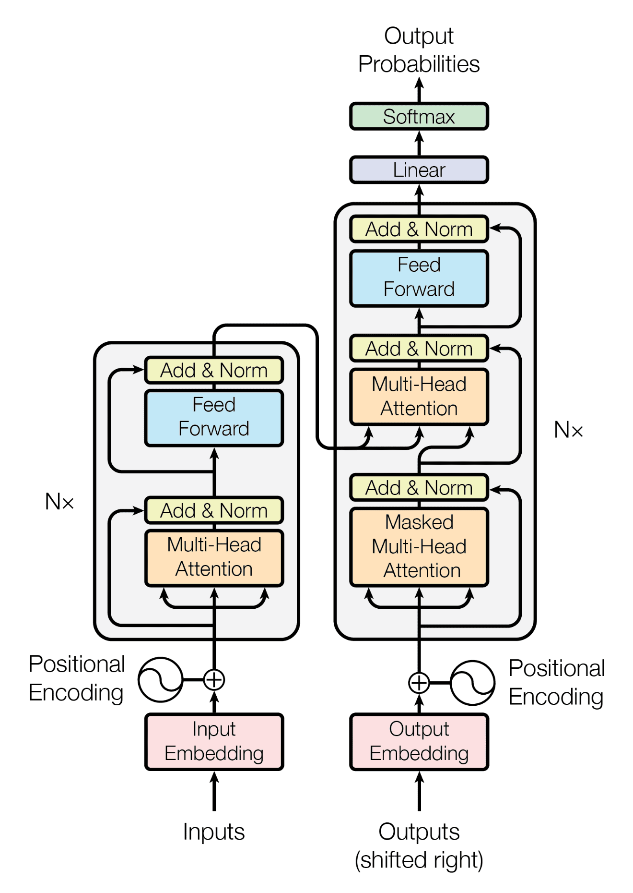

1 Large Language Models
1.1 Introduction
Large language models (LLMs) are “foundation models trained on immense amounts of data making them capable of understanding and generating natural language and other types of content to perform a wide range of tasks” (IBM, 2024).
There are also small (Caballar, 2024), tiny (Tang et al., 2024), and super tiny (Hillier et al., 2024) language models. In this book, I refer to all language models that rely on the modern concept of Transformer-based model architecture as LLMs. When a nomenclature is based on numerical cutoff values in a rapidly expanding field of technology, sooner or later, what we know today as large will soon become hyper tiny. So, let’s simply call them LLMs.
This chapter’s content was primarily generated using local LLMs. I would appreciate any corrections regarding the information presented.
1.2 Background
[Qwen2.5:14b] [Phi4:14b]
The rise of Large Language Models represents a significant leap forward in artificial intelligence and language understanding. These advanced computer systems are designed to understand and generate human-like text proficiently. Characterised by their extensive size—referring not only to the volume of data they can process but also to the complexity and depth of their neural network architecture—the “large” in LLM signifies that these models consist of billions or even trillions of parameters, enabling them to capture nuanced patterns within vast datasets.
The development of LLMs is rooted in advancements in machine learning, particularly deep learning techniques. These techniques involve training artificial neural networks on massive amounts of text data, allowing the models to learn statistical relationships between words, phrases, sentences, and entire documents. This enables them to perform a variety of language tasks such as translation, summarization, question answering, and content generation.
A key feature of LLMs is their ability to generalise from training data to new, unseen inputs. For example, after being trained on diverse text sources, an LLM can generate coherent and contextually appropriate responses in conversations or provide insightful answers to questions it was not explicitly programmed to handle. This generative capability makes them particularly useful for applications like chatbots, virtual assistants, and creative writing aids.
The architecture of LLMs often relies on transformer models, which are designed to process sequences of data efficiently. Transformers utilise mechanisms such as attention layers that allow the model to focus on different parts of an input sequence dynamically, improving its ability to understand context and meaning in complex sentences. This design is crucial for handling tasks requiring long-term dependency understanding, a common challenge in natural language processing.
As LLMs continue to evolve, they are becoming increasingly powerful tools across various industries. In healthcare, they assist with medical documentation by summarising patient notes or providing information retrieval. In education, they help generate practice exercises and personalised learning materials. Furthermore, their ability to process and synthesise large volumes of text has significant implications for content creation and curation in media.
Despite these capabilities, LLMs also pose challenges and ethical considerations. Concerns about data privacy, potential biases embedded in the training data, and the environmental impact of their extensive computational requirements are ongoing discussions within the AI community. Additionally, ensuring that these models align with human values and operate safely in diverse contexts remains a critical area for research.
1.3 Brief History
[Qwen2.5:14b] [DeepSeek-R1:14b]
The development of Large Language Models has been driven by significant advances in artificial intelligence and deep learning over the past four decades. The journey began with simpler models that focused on understanding basic language patterns, but it quickly evolved into sophisticated systems capable of handling complex linguistic tasks.
1.3.1 Early Beginnings: The 1980s-1990s
- Neural Networks Emerge: The exploration of neural networks for natural language processing (NLP) began in the mid-to-late 1980s. These early models laid the groundwork for connectionist approaches, moving away from rule-based systems.
- Recurrent Neural Networks (RNNs): By the late 1980s and early 1990s, RNNs started being applied to language modeling, marking a significant shift in NLP techniques.
1.3.2 The Advent of LSTM and Deep Learning: Early 2000s-2010s
- LSTM Networks: In the mid-2000s, Long Short-Term Memory (LSTM) networks were introduced by Hochreiter and Schmidhuber in 1997. These networks improved RNN performance by effectively capturing long-range dependencies.
- Breakthrough with Deep Learning: The early 2010s saw advancements with models like those developed at Facebook AI Research (FAIR), enhancing the capabilities of neural networks through deep learning techniques.
1.3.3 Transformer Architecture and Pre-training: Late 2010s
- Transformer Introduction: The Transformer architecture, introduced in a 2017 paper by Vaswani et al. (2017), revolutionized NLP with its self-attention mechanism. Since then, Transformers became widely adopted, leading to significant advancements in language modeling.
- Pre-trained Models: In 2017, BERT (Bidirectional Encoder Representations from Transformers) and GPT (Generative Pre-trained Transformer) emerged, utilizing unsupervised learning methods to achieve state-of-the-art performance.
1.3.4 Scaling Up: The Era of Large Language Models
- GPT-3 and Beyond: In 2020, OpenAI’s GPT-3, trained on massive datasets, demonstrated impressive capabilities, highlighting the potential of large-scale models.
- Recent Advancements: Current research focuses on improving efficiency, ethics, and applications, with ongoing developments in models like T5, PaLM, and others.
In summary, the evolution of large language models began in the late 20th century with neural networks replacing rule-based NLP systems. Recurrent Neural Networks (RNNs) and LSTM networks emerged, enhancing language modeling. The Transformer architecture, introduced in 2016, revolutionized NLP through self-attention mechanisms. Pre-trained models like BERT and GPT advanced unsupervised learning, leading to the development of large-scale models such as GPT-3, marking a new era in AI-driven language processing.
1.4 The Transformer Model
[Phi4:14b]
The Transformer model, introduced by Vaswani et al. (2017) in their seminal 2017 paper “Attention is All You Need,” has become a cornerstone for advancements in natural language processing (NLP). It marked a significant departure from traditional sequence-based models like Recurrent Neural Networks (RNNs) and Long Short-Term Memory networks (LSTMs), which process data sequentially. Instead, Transformers leverage parallelization to handle entire sequences at once, making them more efficient and scalable.
1.4.1 Key Components of the Transformer Model

-
Self-Attention Mechanism:
- At the heart of the Transformer is the self-attention mechanism, which allows the model to weigh the importance of different words in a sentence relative to each other.
- This mechanism computes attention scores for every word pair in a sequence, enabling the model to capture dependencies regardless of their distance from each other.
-
Encoder and Decoder Architecture:
- The Transformer architecture consists of an encoder and a decoder, both composed of multiple layers.
- The encoder processes the input sequence and converts it into continuous representations that capture its meaning.
- The decoder then generates the output sequence by attending to these encoded representations and the partially generated output.
-
Positional Encoding:
- Since Transformers do not inherently process sequences in order, they use positional encodings to inject information about the position of each word in a sentence.
- This allows the model to maintain an understanding of word order, which is crucial for meaningful language processing.
-
Layer Normalization and Feed-Forward Networks:
- Each layer in both the encoder and decoder includes sub-layers such as multi-head self-attention and position-wise feed-forward networks, followed by normalization.
- These components ensure that the model can learn complex patterns while maintaining stability during training.
1.4.2 Advantages of Transformers
Parallelization: Unlike RNNs, which process sequences step-by-step, Transformers handle entire sequences simultaneously. This parallelism significantly speeds up training and inference times.
Scalability: The architecture’s ability to leverage large datasets and compute resources has enabled the development of models like GPT (Generative Pre-trained Transformer) and BERT (Bidirectional Encoder Representations from Transformers), which have set new benchmarks in various NLP tasks.
Flexibility: Transformers can be adapted for a wide range of applications beyond translation, including text summarization, sentiment analysis, and more.
1.4.3 Impact on Large Language Models
The introduction of the Transformer model has been pivotal in the evolution of LLMs. By enabling efficient training on massive datasets and facilitating transfer learning, Transformers have empowered models to achieve unprecedented levels of linguistic understanding and generative capability. This has led to applications ranging from conversational agents to sophisticated content generation tools.
The Transformer model’s innovative architecture and attention mechanism have revolutionized NLP, laying the groundwork for the development of powerful large language models that continue to push the boundaries of what machines can understand and generate in human languages.
1.5 Recent Applications of Large Language Models
[Qwen2.5:14b] [Phi4:14b]
Large Language Models have seen significant advancements and are being applied across diverse domains, including healthcare. These models leverage their ability to understand and generate human-like text to solve complex problems efficiently.
1.5.1 General Applications
Automated Content Generation: LLMs are adept at transforming structured data into human-readable content, which is invaluable for businesses and organizations needing to produce large volumes of text efficiently. They can automatically generate reports by analyzing datasets and identifying key trends or insights. In journalism, they assist in producing news articles by summarizing events from structured inputs like press releases or databases. Similarly, LLMs can create executive summaries that highlight the most important points from detailed documents, saving time for professionals who need to digest large amounts of information quickly.
Chatbots and Virtual Assistants: LLMs serve as the backbone for advanced chatbots and virtual assistants, providing natural language understanding and generation capabilities. These models can handle a wide range of queries, offering customer support by answering frequently asked questions or resolving issues based on pre-defined knowledge bases. Moreover, they personalize interactions by learning user preferences over time, thus enhancing user satisfaction. In e-commerce, for example, LLM-powered chatbots can recommend products tailored to individual shopping habits, while in healthcare, virtual assistants might provide initial triage assessments based on patient inputs.
Code Completion and Debugging: Software development benefits significantly from LLMs through code completion features that predict what a developer intends to write next, enhancing productivity by reducing manual coding effort. These models analyze existing codebases to suggest logical continuations or improvements, effectively serving as an intelligent pair programmer. Additionally, LLMs can assist in debugging by identifying potential errors and suggesting corrections based on patterns observed in similar code snippets. This capability helps developers quickly resolve issues and maintain cleaner, more efficient code.
Text Summarization and Translation: LLMs excel at condensing lengthy documents into concise summaries, capturing essential information without losing context or meaning. This functionality is crucial for professionals who need to review extensive reports or research papers efficiently. In translation tasks, LLMs leverage their understanding of multiple languages to provide accurate translations while maintaining the original text’s tone and style. They can handle complex language nuances and idiomatic expressions better than traditional machine translation systems, facilitating effective cross-cultural communication in globalized environments.
1.5.2 Academic Applications
Research Assistance: LLMs significantly enhance research efficiency by performing tasks like summarizing lengthy academic papers into digestible abstracts, thereby saving researchers valuable time. They can also generate comprehensive literature reviews by synthesizing information from multiple sources, highlighting trends and gaps within a field of study. Furthermore, LLMs suggest relevant studies or articles that might not be immediately apparent through traditional search methods, ensuring thoroughness in research projects.
Data Analysis: In disciplines such as social sciences and bioinformatics, analyzing qualitative data can be challenging due to the sheer volume and complexity of text-based information. LLMs assist by identifying patterns, themes, or significant correlations within these large datasets, providing researchers with deeper insights that might be missed through manual analysis. This capability enhances both the depth and efficiency of research analyses, allowing for more robust conclusions.
Educational Tools: LLMs integrated into educational platforms revolutionize personalized learning experiences. They generate practice problems tailored to individual student needs and provide instant feedback on student work, which helps reinforce learning objectives. Additionally, LLMs can design adaptive learning paths that evolve based on a student’s progress, ensuring that each learner receives the appropriate level of challenge and support.
Grant Writing and Proposal Development: Academics often face challenges in crafting compelling grant proposals due to the competitive nature of funding opportunities. LLMs assist by providing structural templates, suggesting content improvements, or generating sections of the proposal text. This not only enhances productivity but also increases the quality and coherence of proposals, making them more likely to succeed.
Language Translation and Interpretation: LLMs with multilingual capabilities bridge language barriers in academic collaboration, enabling seamless translation of documents and interpretation of research findings across languages. This functionality is crucial for international collaborations, allowing researchers from diverse linguistic backgrounds to share insights without the constraints of language limitations.
Peer Review Processes: Institutions are exploring how LLMs can support peer review by offering initial assessments of manuscripts. These models evaluate aspects like clarity, coherence, and potential issues, helping reviewers focus on more critical content evaluations rather than basic structural concerns. This streamlines the review process while maintaining rigorous academic standards.
Simulated Dialogues for Training: LLMs are valuable tools in training students within psychology and education fields by simulating human dialogues. These simulations allow learners to practice conversational skills or therapeutic techniques in a safe, controlled environment, providing an opportunity to refine their abilities before real-world application.
1.5.3 Medical Applications
Clinical Documentation: LLMs significantly reduce the administrative burden on healthcare providers by automating clinical documentation tasks. AI-driven systems can generate detailed patient progress notes from voice recordings during consultations or directly from electronic health records (EHRs). This automation allows clinicians to focus more on patient care rather than paperwork, improving efficiency and accuracy in maintaining comprehensive medical records.
Disease Diagnosis and Prediction: LLMs enhance diagnostic processes by analyzing vast amounts of medical literature and patient data to identify disease patterns. These models can suggest potential diagnoses based on a combination of symptoms, patient history, and known medical correlations. Additionally, LLMs aid in predicting the progression of diseases, allowing healthcare providers to implement early interventions or personalized treatment plans that could improve patient outcomes.
Patient Education Materials: LLMs generate personalized educational materials for patients by tailoring content based on individual medical records and demographic information. This ensures that patients receive clear, understandable explanations about their conditions and available treatment options. Customized pamphlets or web pages can address specific concerns or questions, empowering patients to actively participate in their own healthcare management.
Pharmaceutical Research: In the realm of drug discovery and development, LLMs analyze extensive scientific literature to identify potential targets and compounds. By scanning databases of chemical structures and biological pathways, these models suggest promising drug candidates for further investigation. This capability accelerates the research process, potentially leading to faster development of new medications and therapies.
Mental Health Support: LLMs power virtual therapists that provide empathetic support for mental health issues. These conversational agents offer advice and resources based on user input, assisting with managing conditions such as anxiety or depression. By simulating human-like interactions, LLMs can offer immediate support and guidance, supplementing traditional therapy options and increasing accessibility to mental health care.
Medical Record Management: LLMs facilitate the organization and retrieval of medical records by enabling intelligent search capabilities across large datasets. Healthcare professionals can efficiently access relevant patient history, lab results, and previous treatments with these tools, improving continuity of care and ensuring that critical information is readily available when needed.
Research Literature Summarization: LLMs help clinicians and researchers stay informed about the latest advancements by summarizing recent research papers and studies. Automated summaries provide concise overviews of complex journal articles in fields such as oncology, cardiology, or neurology. This application saves time for healthcare professionals, allowing them to quickly assimilate new knowledge and integrate it into their practice.